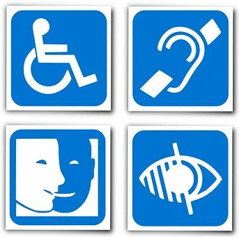

InfoDicap.fr > Qu'est ce que c'est ?
L'informatique et les handicaps
Qu'est ce que l'informatique ?
L'informatique, un sujet très vaste, de manière generale, il est qualifié comme un science. Une science ? Mais pourtant je l'utilise tous les jours, me direz vous. En effet, une grande partie de la population l'utilise dans la vie de tous les jours avec vos ordinateurs, vos telephones, ou autres appareils electroniques, vous faites de l'informatique. Il peut être utilisé de manière ludique sur des sites ou des applications. J'espere que vous avez fait un tour sur notre page Jeux quand même. En informatique, les ordinateurs utilisent des 1 et des 0 pour communiquer. Mais nous, nous voyons des chiffres, des lettres, des images et heureusement, croyez moi je sais de quoi je parle. Vous savez maintenant ce que l'informatique est dans les grandes lignes, si vous voulez plus de precision, referez vous à notre page Associations et Sites Specialisés
Comment l'informatique peut aider le handicap ?
L'informatique peut être très utile pour les handicapées. Cela facilite grandement leur vie. Il existe de nombreuses aides differentes, comme par exemple, des logiciels, pour certains types d'handicap. Comme vous êtes sur un site spécialisés pour les handicaps cognitifs, la definition ici : Accueil, vous trouverez une presentation de quelques technologies et logiciels ici : Logiciels et Aides pour les handicaps
Quels sont les limites ?
Il existe de nombreuses limites dans l'informatique de manière generale. Alors imaginez avec les handicaps, c'est encore pire. En effet, certains logiciels ou technologie sont payantes. C'est normal me direz vous, et je suis d'accord, mais c'est tres cher comme technologies si on en veut une assez performante.
De plus, souvent, il faut un ordinateur, normal pour faire de l'informatique, mais certains logiciels ne sont disponible que sur certaines plateformes comme Windows, Mac, ou sur certains sites internet, ce qui pose probleme si un utilisateur ne s'y connait pas du tout. Si vous voulez plus de details sur les logiciels et où ils sont disponibles : Associations et Sites Specialisés